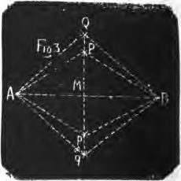

Libro I: Notazione e Lemma Fondamentale (§§ 11–14)¶
Lorenzo Mascheroni (La Geometria del Compasso, Pavia 1797, pp. 14–15)
Istessamente dati per esempio tre intervalli \(AB, CD, EF\); se dirò: si faccia a :math:`CD = EG`; ad :math:`AB = FG`; si dovrà intendere che dica: col raggio \(CD\), e col centro \(E\) si descriva un cerchio, nella cui circonferenza sia il punto \(G\). Quindi coll’intervallo \(AB\), e col centro \(F\) si descriva un altro cerchio, che tagli il primo nel punto \(G\).


Alle volte nelle dimostrazioni nomineremo alcune linee rette, che non saranno nella figura, nominando i due punti estremi, ai quali dovrebbero esser condotte; come se nella figura del § 11, nominassi la retta \(AB\), ovvero \(CD\). Ciò faremo quando non vi sarà pericolo d’oscurità, per conservar nitida la figura, e lasciare apparire meglio la costruzione fatta col solo cerchio.
Lemma. Se co’ due centri \(A\), e \(B\), e co’ raggi \(AP\) ed \(AQ\) si descrivano degli archi, che si tagliano in \(P\) e \(p\); \(Q\) e \(q\); i punti \(Q, P, p, q\) saranno nella stessa retta (fig. 3).
Dim. Essendo per costruzione eguali rispettivamente tra loro tutti i lati de’ triangoli \(APp, BPp\); l’angolo \(APp\) sarà eguale all’angolo \(BPp\) (8, lib. I). Per la stessa si dimostra essere \(APQ = BPQ\). Dunque la somma de’ due \(APp, APQ\) è eguale alla somma de’ due \(BPp, BPQ\). Ma la somma di questi quattro angoli è eguale a quattro retti (13, lib. I, Coroll.). Dunque ciascuna delle somme di due eguali equivale a due retti. Dunque la \(QPp\) è retta (14, lib. I). Nella stessa maniera si dimostra, che è retta la \(Ppq\). Dunque i punti \(Q, P, p, q\) sono nella stessa retta.
Stanti le stesse cose del § 13, le rette \(AB, Pp\), così \(AB, Qq\) si tagliano ad angoli retti, e sono divise per metà nel punto d’intersezione \(M\).